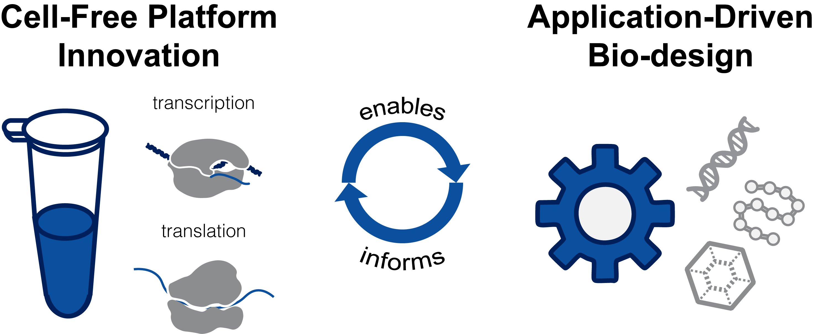

What we can build with biology is limited by the tools we have. So we build better tools.
The Zhang Lab develops cell-free synthetic biology platforms that draw from the vast diversity of biological machinery and make it programmable. Cell-free gene expression systems are where we build and characterize tools free of the constraints living cells impose.
Then comes the real test: we put the tools back into living cells to find out whether we got it right.
Our current tool-building efforts target human health. But the tools are not specific to it. If you see an application we have not thought of, we want to hear about it.

Platform innovation and application drive one another: new cell-free capabilities open previously inaccessible applications, and application-driven challenges expose the limits of existing platforms.
We welcome researchers from across engineering and the natural sciences. What matters most is intellectual curiosity, creativity, and being a good teammate who collaborates openly with the rest of the lab.
Email me at yz350[at]rice[dot]edu with your CV, a brief description of your research interests and career plan, why you are interested in this lab, and contact information for three references. More detail on our philosophy and open positions.